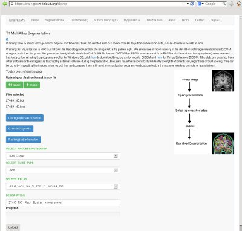
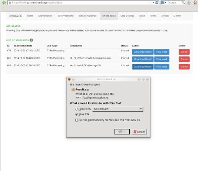

This tutorial demonstrates how to use the T1 Segmentation feature of MRICloud to obtain a 286 label segmentation of an MPRAGE scan.
|
| Select T1-Segmentation Pipeline（选择T1分割的流水线） |
After logging in to MRICloud, select the Segmentation drop down menu, then select T1-MutliAtlas Menu Item
more information
|  |
| DICOM to Analyze Converter（下载他提供的转换器） |
The pipeline uses Analyze format.
A Dicom to Analyze converter (with download instructions) is available for download
more information
|  |
| Specify MPRAGE files to process（选择年龄段的脑图谱信息） |
Use push buttons to select the Analyze files to process.
The user can select the appropriate atlas to be used by the pipeline. The user can add an optional description.
more information
| |
| Initiate Processing（开始处理） |
Initiate processing by pressing the Upload push button
Expected throughput rates provided
more information
|  |
| Monitor Status（状态监视器） |
After the scan has been submitted, the user can monitor the progress using MyJobStatus Menu Item
more information
|  |
| Download Results |
After the segmentation is complete a Download Results button will be displayed. The user can download the results (in the form of a zip file) to the users file system. The results includes segmentation of 286 structures as well as summary statistics of the structures.
more information
|  |